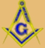
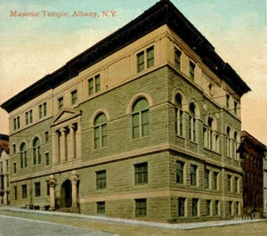

|
by Stefan Bielinski  Masonry probably first came to Albany during the Seven Years War. A British army lodge is said to have met in Albany in 1758. When those soldiers moved on the following Spring, an Albany Lodge was unveiled with Richard Cartwright, Henry Bostwick, and William Ferguson installed as wardens "to set and act during our absence, or until they . . . can procure a separate warrant for themselves from the Grand Lodge of Ireland." The Albany group applied to the provincial Grand Master and received a charter as "Union Lodge No. 1" dated February 21, 1765. Cartwright was named Master, William Benson senior warden, and John Visscher junior warden. No records of its early meetings have been found and the lodge was thought to have met at Cartwright's Southside tavern. On October 18, 1766 the city council granted Dr. Samuel Stringer a deed "for a Lott of ground on the Hill near the Fort adjoining the English Burying Ground" on which to erect a lodge building. Subsequent transactions conveyed an additional and adjoining lot the the breathers. On December 20. 1767, a new warrant empowered a second lodge called the "Ineffable Lodge of Perfection" with William Gamble, Francis Pfister, Thomas Swords, Thomas Lynott, and Richard Cartwright as named members. A week later, members of the Union Lodge together with the above-named members of the Ineffable Lodge paraded through the Streets of Albany.Founder of the Johnstown lodge, Albany houseowner but actually a resident of Johnstown, Sir William Johnson showed a special affinity for his Albany brethren up until his death in the summer of 1774. On April 12, 1768, the cornerstone of the new Masonic building was laid at the intersection of what became known as the northwest corner of Lodge Street and Maiden Lane. Completed in June, that building became Masonic headquarters in Albany although the Union Lodge still held some meetings at Cartwright's. Manuscript Masonic minute books date from 1767. Membership rolls for Union Lodge are part of those records and have been transcribed and printed in a number of sources. The following (partially complete and selectively presented) numbered list of members (totaling more than 400 names) helps us understand the extent of Masonry in early Albany:
1. Peter W. Yates, Master Reknowned portraitist Ezra Ames painted a number of his Masonic brethren. Conspicuously absent from these lists, but a Mason since he was twenty-two, Stephen Van Rensselaer III later served as Grand Master for New York State. In 1776, when he was initiated in Albany, and at different times when he was in Albany over the next four decades, Morgan Lewis connected with his Masonic brothers. During the Revolution, Major General John Stark and other officers in the American army called on their Masonic connections at the Albany lodge. Thomas Smith Webb is said to have received a copy of a seminal Masonic treatise from fellow Englishman John Hammer following Hammer's arrival in Albany in 1793 and to have adapted them to American use.  In March 1895, the New York Times printed an article describing the new "stately and solid "Masonic structure to be built in Albany and summarizing the history of the Albany lodge. At that time, the notice offered that Albany had eleven separate lodges with a total membership of close to 2,500. They all would be able to use the new lodge building that subsequently was erected on the northwestern corner of Lodge Street and Maiden Lane (Erastus Corning Way) today. The new building was expected to cost a hundred thousand dollars and would be "used exclusively for Masonic purposes." This web-based offering represents an early ambition to place an important (and quasi-secular) social group on the community landscape. At this point, it is more of a compilation of the known rather than an original statement and interpretation. Sorry, for now! Sources: Traditional narrative histories and compilations begin with "Origin of the Ancient Accepted Scottish Rite in Albany," in Munsell's Collections, volume 3, pp. 410-24 and Charles T. Mc Clenachan, History of the Most Ancient and Honorable Fraternity of Free and Accepted Masons in the State of New York (New York, 1888). Others have followed! Most useful on the early Albany Masons is an unpublished manuscript by lodge member James J. Finke entitled "Albany Masonic Meeting Places: 1750's to Present." (1980). The lodge has a collection of historical records and documents.
Basic online links:
This massive compilation out of central New York bears scrutiny: OMDHS!
Contact the Albany Masonic Temple
The printed list of the first fifty members (344 members in all by October 1803) is roughly chronological! Membership appeared to have extended into the countryside as many of those signing in at the Albany Lodge were not city residents. Illustrative detail from an often-encountered of postcard of unknown origin. first posted 10/10/03; last updated 12/29/17 |